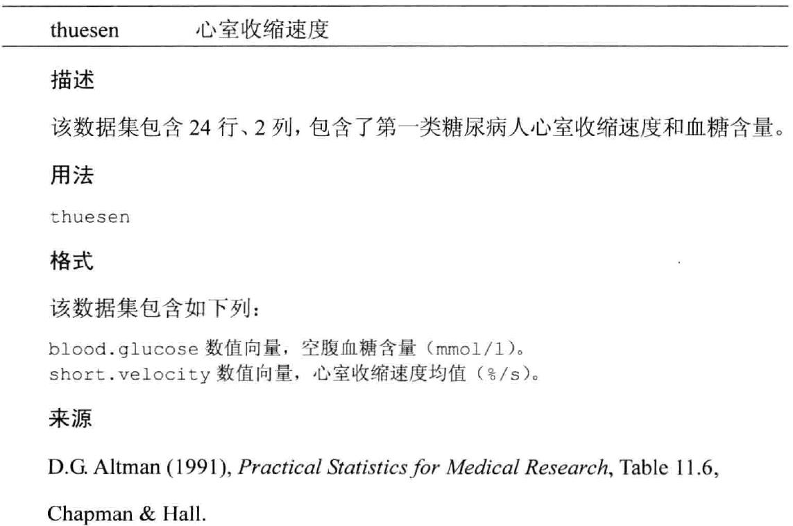
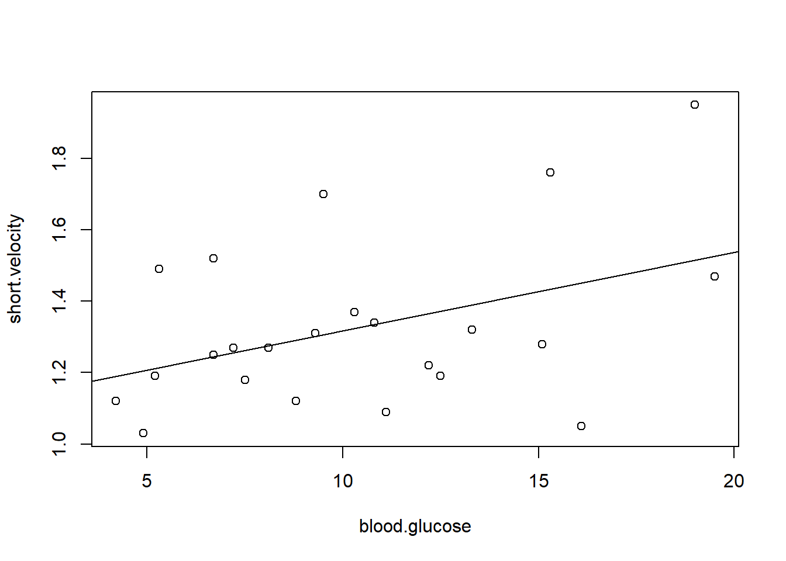
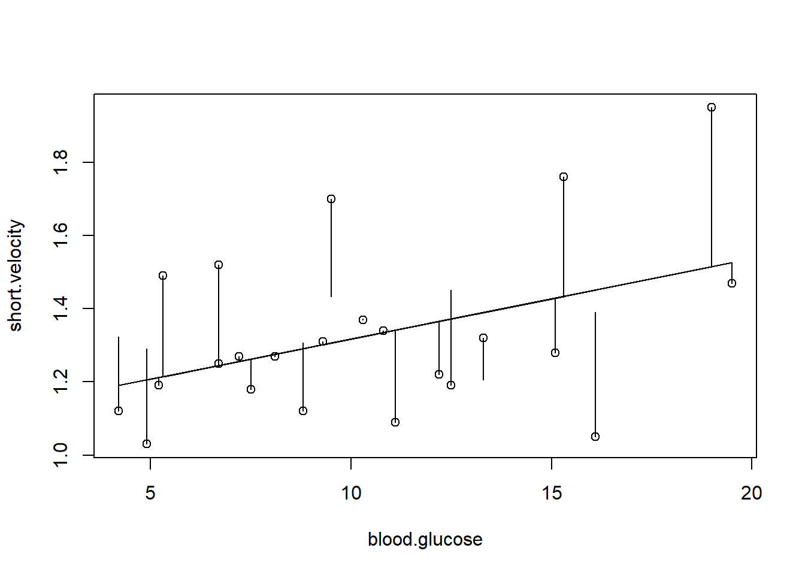
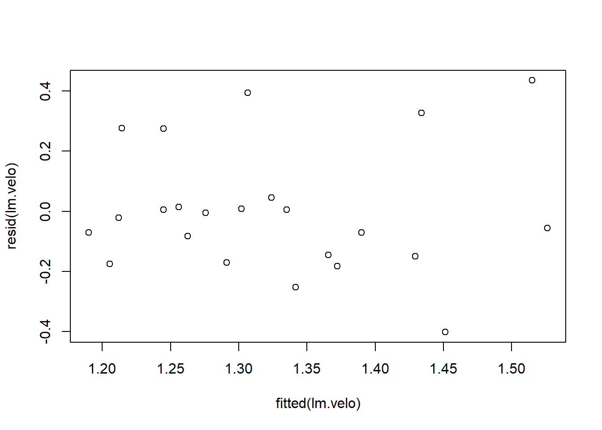
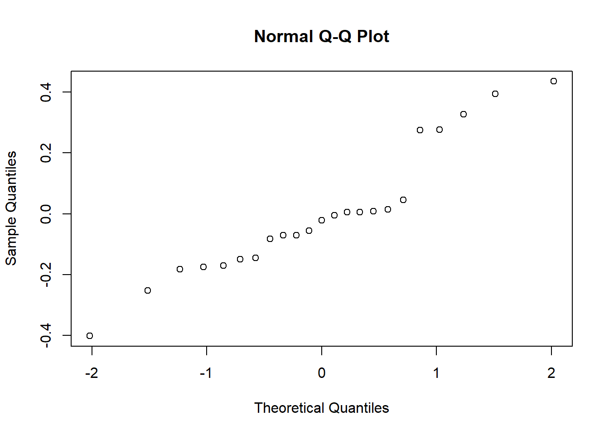
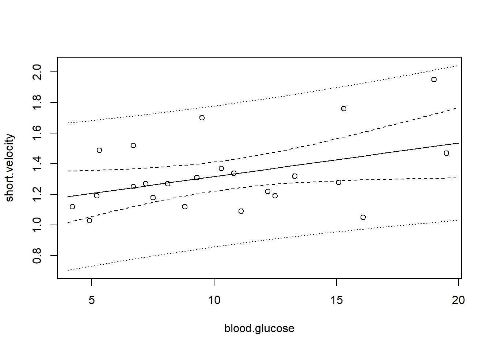

Chapter 6 残差与回归值&预测域与置信带

library(ISwR)
attach(thuesen)
fit<- lm(short.velocity~blood.glucose)
summary(fit)##
## Call:
## lm(formula = short.velocity ~ blood.glucose)
##
## Residuals:
## Min 1Q Median 3Q Max
## -0.40141 -0.14760 -0.02202 0.03001 0.43490
##
## Coefficients:
## Estimate Std. Error t value Pr(>|t|)
## (Intercept) 1.09781 0.11748 9.345 6.26e-09 ***
## blood.glucose 0.02196 0.01045 2.101 0.0479 *
## ---
## Signif. codes: 0 '***' 0.001 '**' 0.01 '*' 0.05 '.' 0.1 ' ' 1
##
## Residual standard error: 0.2167 on 21 degrees of freedom
## (因为不存在，1个观察量被删除了)
## Multiple R-squared: 0.1737, Adjusted R-squared: 0.1343
## F-statistic: 4.414 on 1 and 21 DF, p-value: 0.0479plot(blood.glucose,short.velocity)
abline(fit)
lm.velo <- lm(short.velocity~blood.glucose)
fitted(lm.velo)## 1 2 3 4 5 6 7 8
## 1.433841 1.335010 1.275711 1.526084 1.255945 1.214216 1.302066 1.341599
## 9 10 11 12 13 14 15 17
## 1.262534 1.365758 1.244964 1.212020 1.515103 1.429449 1.244964 1.190057
## 18 19 20 21 22 23 24
## 1.324029 1.372346 1.451411 1.389916 1.205431 1.291085 1.306459plot(blood.glucose,short.velocity)
# lines(blood.glucose,fitted(lm.velo))
# wrong 因有缺失值，所以此命令报错
lines(blood.glucose[!is.na(short.velocity)],fitted(lm.velo))
# cc <- complete.cases(thuesen)
# options(na.action=na.exclude)
# lm.velo <- lm(short.velocity~blood.glucose)
# fitted(lm.velo)
# lines(blood.glucose,fitted(lm.velo))
segments(blood.glucose,fitted(lm.velo),
blood.glucose,short.velocity) #带有残差线段的图形
plot(fitted(lm.velo),resid(lm.velo)) # 残差与回归值的散点图
qqnorm(resid(lm.velo)) # Q-Q图
predict(lm.velo)## 1 2 3 4 5 6 7 8
## 1.433841 1.335010 1.275711 1.526084 1.255945 1.214216 1.302066 1.341599
## 9 10 11 12 13 14 15 17
## 1.262534 1.365758 1.244964 1.212020 1.515103 1.429449 1.244964 1.190057
## 18 19 20 21 22 23 24
## 1.324029 1.372346 1.451411 1.389916 1.205431 1.291085 1.306459predict(lm.velo,int="c") # 置信区间confidence interval## fit lwr upr
## 1 1.433841 1.291371 1.576312
## 2 1.335010 1.240589 1.429431
## 3 1.275711 1.169536 1.381887
## 4 1.526084 1.306561 1.745607
## 5 1.255945 1.139367 1.372523
## 6 1.214216 1.069315 1.359118
## 7 1.302066 1.205244 1.398889
## 8 1.341599 1.246317 1.436881
## 9 1.262534 1.149694 1.375374
## 10 1.365758 1.263750 1.467765
## 11 1.244964 1.121641 1.368287
## 12 1.212020 1.065457 1.358583
## 13 1.515103 1.305352 1.724854
## 14 1.429449 1.290217 1.568681
## 15 1.244964 1.121641 1.368287
## 17 1.190057 1.026217 1.353898
## 18 1.324029 1.230050 1.418008
## 19 1.372346 1.267629 1.477064
## 20 1.451411 1.295446 1.607377
## 21 1.389916 1.276444 1.503389
## 22 1.205431 1.053805 1.357057
## 23 1.291085 1.191084 1.391086
## 24 1.306459 1.210592 1.402326predict(lm.velo,int="p") # 预测区间prediction interval.预测区间PI总是要比对应的置信区间CI大，这是因为在对单个响应与响应均值的预测中包括了更多的不确定性。## Warning in predict.lm(lm.velo, int = "p"): predictions on current data refer to _future_ responses## fit lwr upr
## 1 1.433841 0.9612137 1.906469
## 2 1.335010 0.8745815 1.795439
## 3 1.275711 0.8127292 1.738693
## 4 1.526084 1.0248161 2.027352
## 5 1.255945 0.7904672 1.721423
## 6 1.214216 0.7408499 1.687583
## 7 1.302066 0.8411393 1.762993
## 8 1.341599 0.8809929 1.802205
## 9 1.262534 0.7979780 1.727090
## 10 1.365758 0.9037136 1.827802
## 11 1.244964 0.7777510 1.712177
## 12 1.212020 0.7381424 1.685898
## 13 1.515103 1.0180367 2.012169
## 14 1.429449 0.9577873 1.901111
## 15 1.244964 0.7777510 1.712177
## 17 1.190057 0.7105546 1.669560
## 18 1.324029 0.8636906 1.784367
## 19 1.372346 0.9096964 1.834996
## 20 1.451411 0.9745421 1.928281
## 21 1.389916 0.9252067 1.854626
## 22 1.205431 0.7299634 1.680899
## 23 1.291085 0.8294798 1.752690
## 24 1.306459 0.8457315 1.767186# pred.frame <- data.frame(thuesen[4:20,]) # blood.glucose 的值是随机排列的，我们不希望置信曲线上的线段杂乱无章地排列
pred.frame <- data.frame(blood.glucose= 4:20)
pp <- predict(lm.velo, int="p", newdata=pred.frame)
pc <- predict(lm.velo, int="c", newdata=pred.frame)
plot(blood.glucose,short.velocity,
ylim=range(short.velocity, pp, na.rm=T))
pred.gluc <- pred.frame$blood.glucose
matlines(pred.gluc, pc, lty=c(1,2,2), col="black")
matlines(pred.gluc, pp, lty=c(1,3,3), col="black")
detach(thuesen)